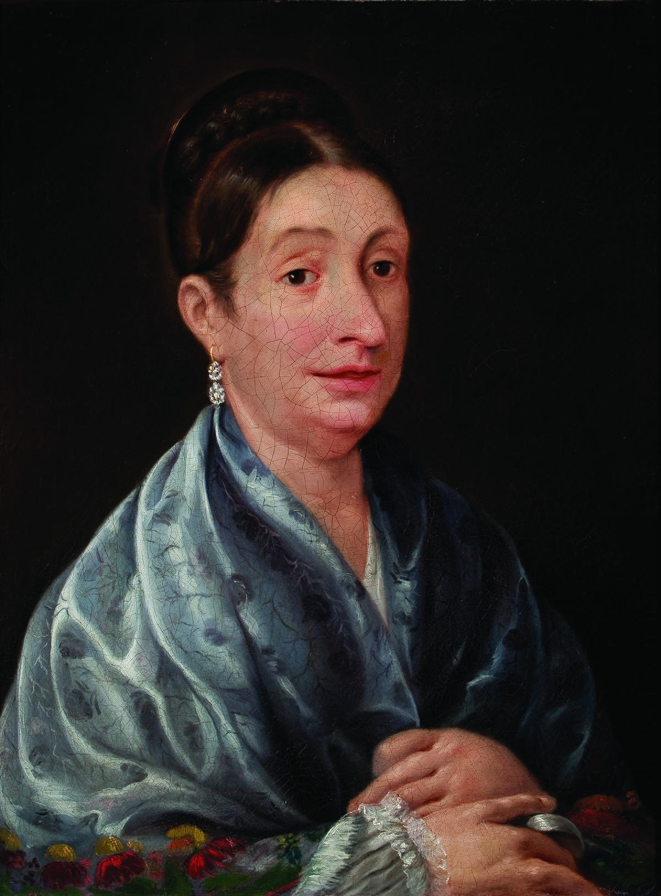

A lo largo del tiempo las figuras mas emblematicas de la independencia era el cura Miguel Hidalgo, ignacio Allende, Jose Maria Morelos y Pavón, y Vicente Guerrero. Sin embargo nunca se le dio importancia a Josefa Ortiz, quien ayudo a la indenpendencia y ayudo cuando descubrieron la conspiracion de Allende.
Tal como las emblematicas adelitas en la revolución mexicana, hubo mujeres en la revolución.
En el primer plano, al ser una independencia muchas mujeres al igual de hombres se vieron en la necesidad de sacar a los españoles de sus tierras despues del hartazgo y las limtaciones que existia entre un nativo, un español y criollo.
Tambien en estos puntos podemos hablar en lo que ayudaron, esto fue en espionaje, abastecimiento de alimentos y armas, tambien combatieron con ellos, razon por la que eran encarceladas y ejecutadas,
Otra de las mujeres emblematicas en la indepencia fue Leona Vicario, quien fue reconocida por Profirio Diaz. Que cosas ¿no?
Leona Vicario ayudó principalmente a financiar la guerra y dar informacion confiedencia, por lo que se le ha reconocido por tan noble ayuda.
Dos de las mujeres que se ofrecieron como alimento, tras la escacez de alimentos en las batallas, fueron Antonieta Nava y Catalina Gonzalez, dos mujeres que fueron recordadas y sus nombres escritos en oro en el muro de honor de la camara de diputados.
Mas de estas heroinas fueron: Mariana Rodríguez del Toro (conspiradora). María Tomasa Estévez, Carmen Camacho (seductoras). María Fermina de Rivera, Altagracia Mercado, Prisca Martina de Ocampo, Manuela Medina (a quien la Junta de José María Morelos le dio el título de capitana), Carmen de las Piedras de Elías, las hermanas Francisca y Magdalena Godos (guerrilleras). Gertrudis Armendáriz de Hidalgo y Costilla y María Petra Teruel de Velasco, Luisa Martínez (financiadoras). Gertrudis Bocanegra (y espia) quien ademas fue honrada con una estaua a su honor.
Conoce mas sobre ellas.
Atalia Paredes
PILARES Magdalena De las Salinas